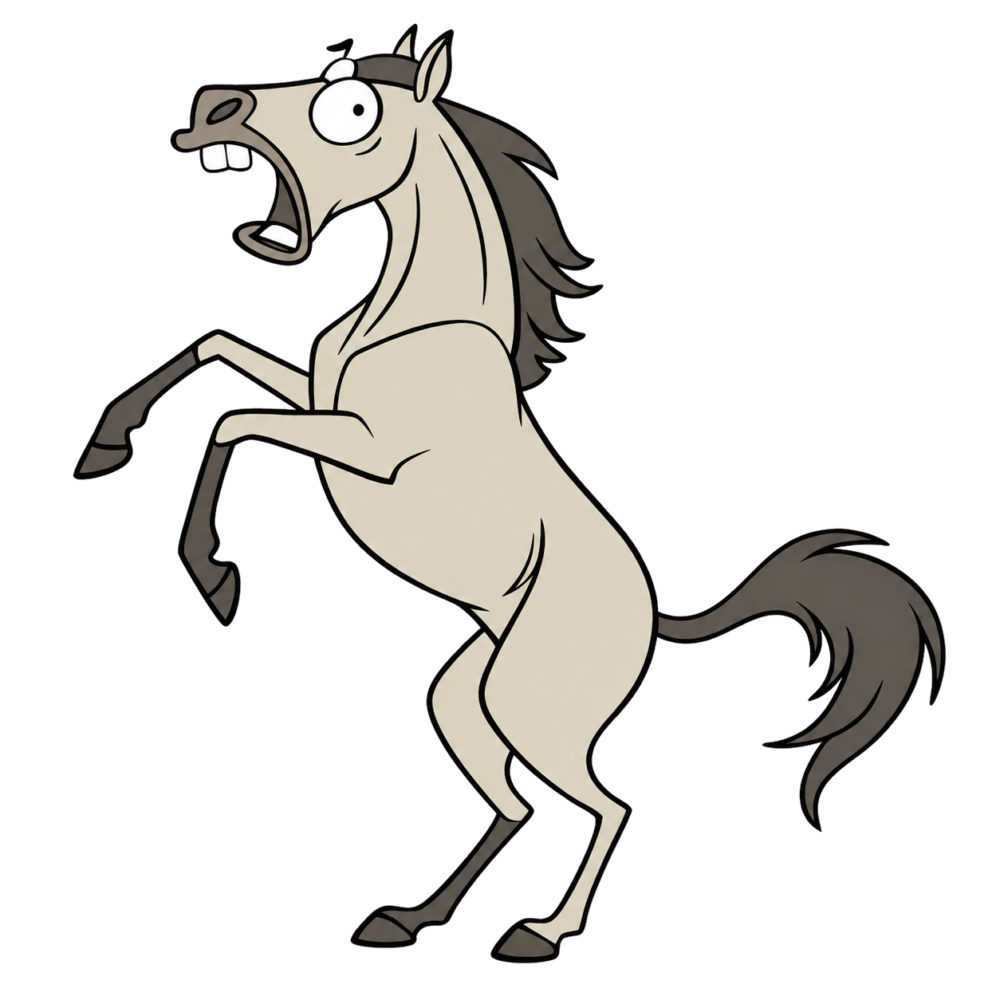
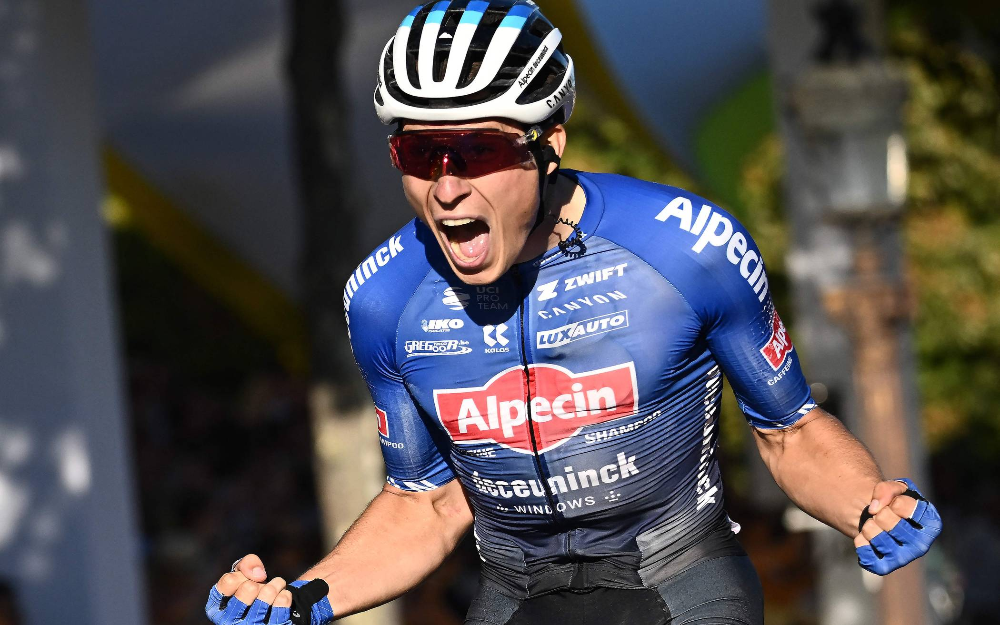
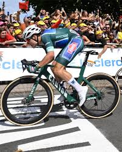
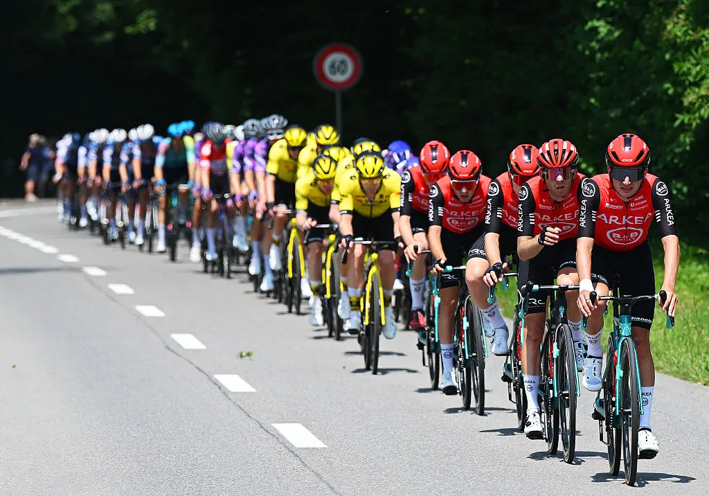
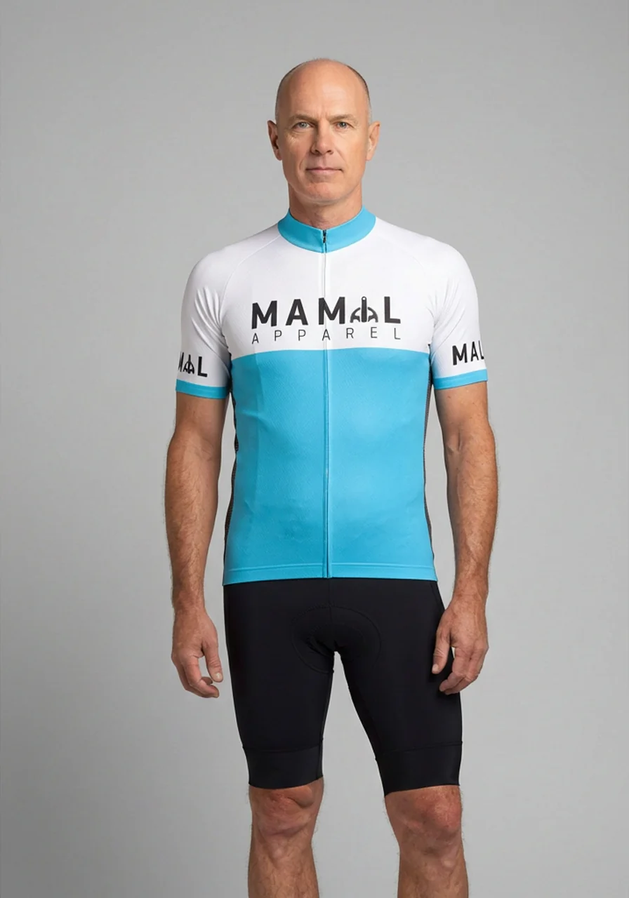
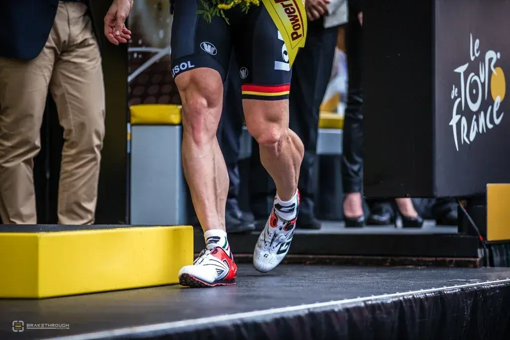
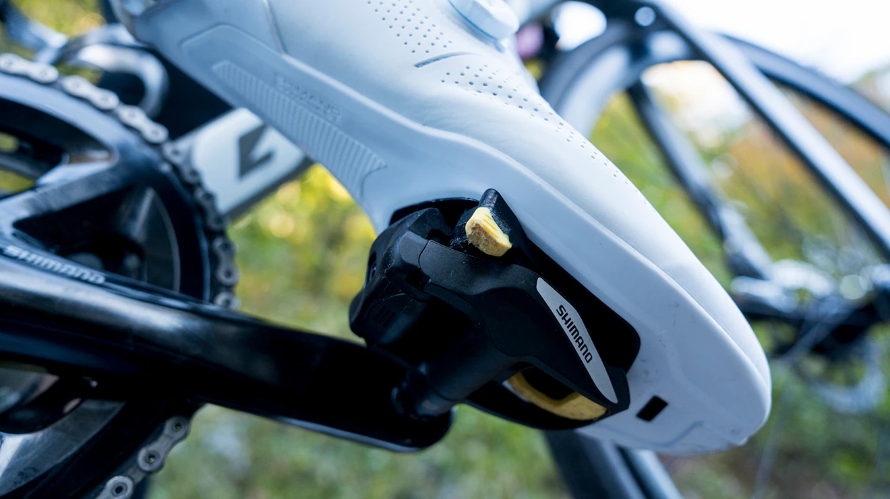
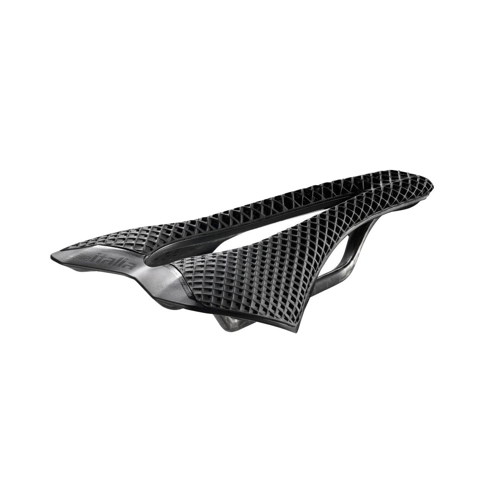
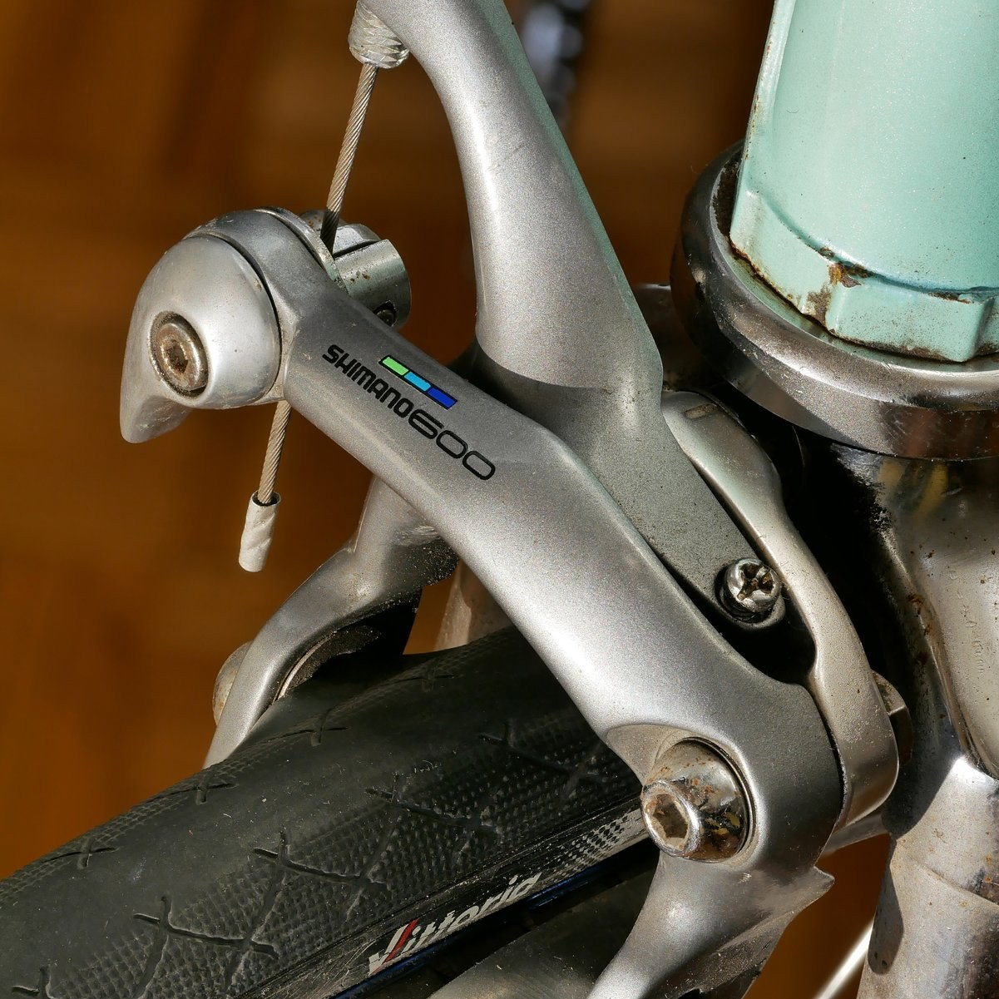
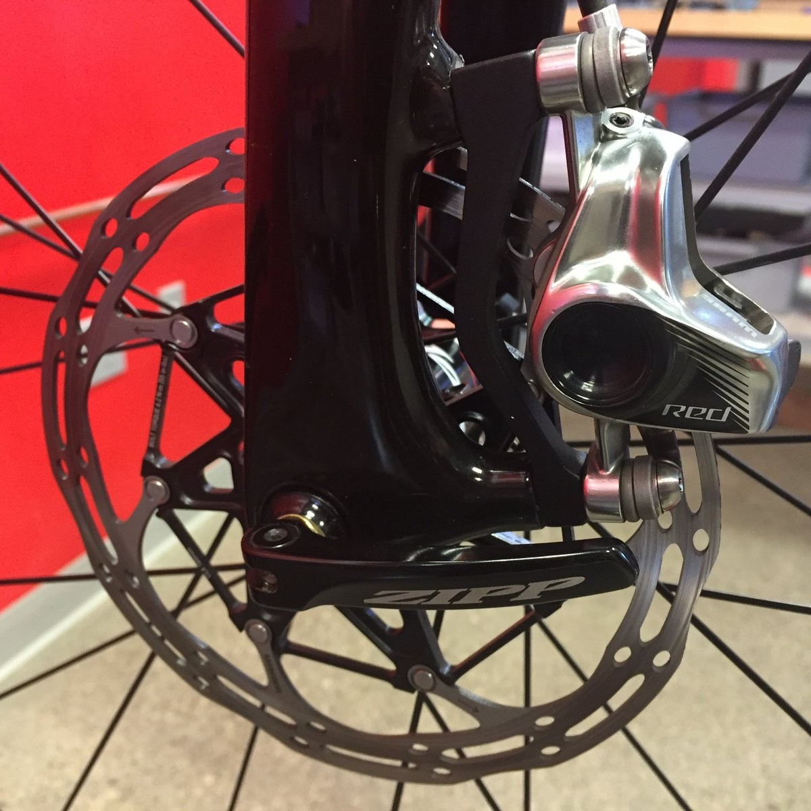

борьба за господство на дороге
Конь:
100км за коня 6-10 часов / годы подготовки.
Очень сильный конь 4:30-5:30 < 25км/ч
Milan - San-Remo 2024 (16.03)
288км / 2550м набора высоты
Jasper Philipsen - 6h 14’ 44” - 46км/ч
Очень тренированному endurance коню нужно больше суток.
Элитный конь, почти фантастический результат: 15 часов. Есть существенные риски для здоровья.
Jasper Philipsen 20.03.2024 выигрывает Brugge–De Panne 198.9 км, средняя скорость >45км/ч


анатомия стремительного хищника

Специальный руль
Седло выше руля
законы жизни в стае

Команда
30% экономии в небольшой группе
До 90% в центре пелотона
Blocken et al., 2018 — Aerodynamic drag in cycling pelotons: New insights by CFD simulation and wind tunnel testing
цена принадлежности к виду
вторая кожа Homo Lycra

Jersey + Bibs: 70–150 € (бюджет) / 300–600 € (pro)
Base layer: 0-15–30 € / 50–100 € (мериносовая шерсть)
Перчатки + Носки: 15–50 + 0€ / 40–80 + 10-50€
Велотуфли: 50–120 € / 150–400 €
Очки: 20–100 € / 150–250 €
Шлем: 40–80 € / 200–330 € (аэро)
Итого: 195–530 € / 900–1’800 €
тайный обряд посвящения в племя

симбиоз человека и машины

орган страдания как эволюционное преимущество

Узко и жесткое — под седалищные кости в наклонной посадке, а не под мягкие ткани. Минимум набивки — толстый поролон продавливается и увеличивает давление на мягкие ткани
Без пружин — жёсткая платформа = меньше потерь мощности при педалировании
Вырез/канал по центру — снимает давление с полового нерва и сосудов
Разные ширины — под индивидуальную ширину седалищных костей
инстинкт самосохранения и борьба с ним

клещевой (rim brake)

дисковый (disc brake)